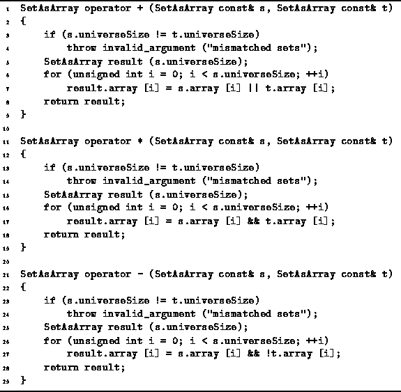

Data Structures and Algorithms
with Object-Oriented Design Patterns in C++
Data Structures and Algorithms
with Object-Oriented Design Patterns in C++
Program  overloads the three operators,
operator+, operator* and operator-,
to provide the union, intersection, and difference operations
for SetAsArray instances.
Operators +, * and -
correspond to
overloads the three operators,
operator+, operator* and operator-,
to provide the union, intersection, and difference operations
for SetAsArray instances.
Operators +, * and -
correspond to  ,
,  and -, respectively.
and -, respectively.

Program: SetAsArray Class Union, Intersection and Difference Operator Definitions
The set union operator takes two references to SetAsArray instances,
s and t,
and computes a result of type SetAsArray.
The implementation given requires
that the s and t sets be compatible.
Two sets are deemed to be compatible if they have the same universe.
The result also has the same universe.
Consequently, the Boolean array in all three sets has the same length, N.
The set union routine creates a result array of the required size
and then computes the elements of the array as required.
The  element of the result is true
if either the
element of the result is true
if either the  element of s
or the
element of s
or the  element of t is true.
Thus, set union is implemented using
the Boolean or operator,
||.
element of t is true.
Thus, set union is implemented using
the Boolean or operator,
||.
The set intersection operator is almost identical to set union, except that the elements of the result are computed using the Boolean and operator. The set difference operator is also very similar. In this case, an item is an element of the result only if it is a member of s and not a member of t.
Because all three routines are almost identical,
their running times are essentially the same.
I.e., the running time of
the set union, intersection, and difference operations is O(N),
where  .
.
 Copyright © 1997 by Bruno R. Preiss, P.Eng. All rights reserved.
Copyright © 1997 by Bruno R. Preiss, P.Eng. All rights reserved.